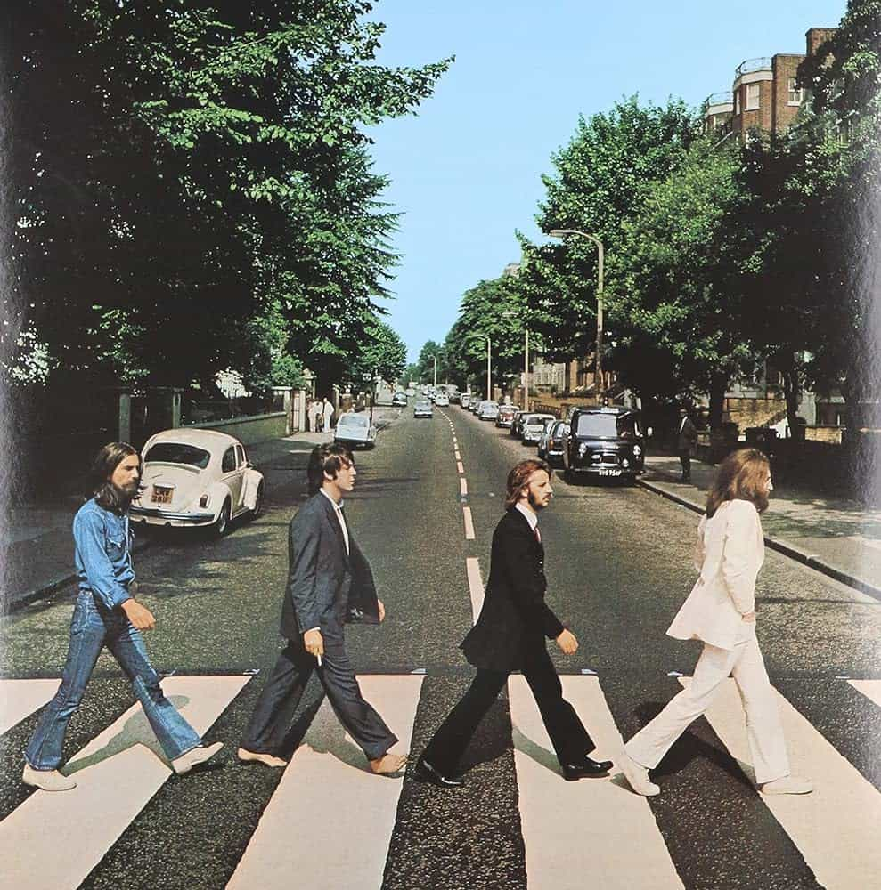

Abbey Road (1969)
Roundly hailed as one of the best albums ever recorded Abbey Road marks the Beatles' eleventh and final project recorded. From the jump, with a bluesy and driving opener Come Together, to George Harrison's seminal love song Something, Abbey Road is a near-perfect record stuffed with memorable moments from each Beatle. The iconic Here Comes the Sun contrasts the oblique and brooding growl of I Want You (She's So Heavy), giving way for a medley in the album's back half before closing with the aptly-titled The End. Abbey Road was an instant classic that marked four of the most talented musicians of all time at their apex stamping their legacy and revolutionized recording technology in its use of eight-track tape machines. Abbey Road is my favorite Beatles record and a must-listen for any and all.
Come Together - 4:19
Something - 3:02
Maxwell's Silver Hammer - 3:27
Oh! Darling - 3:27
Octopus's Garden - 2:50
I Want You (She's So Heavy) - 7:47
Here Comes The Sun - 3:05
Because - 2:45
You Never Give Me Your Money - 4:02
Sun King - 2:26
Mean Mr Mustard - 1:06
Polythene Pam - 1:12
She Came In Through The Bathroom Window - 1:58
Golden Slumbers - 1:31
Carry That Weight - 1:36
The End - 2:21
Her Majesty - 0:25